Formação completa
Curso completo de Confeitaria
Curso semestral completo, com mais de 30 aulas, pensado para habilitar a aluna a atuar como confeiteira profissional.

Cursos Presenciais
Entre para o mundo da confeitaria com quem une experiência, técnica e trajetória reconhecida.
Aprenda com quem tem experiência, desenvolva repertório técnico e avance com mais segurança no universo da confeitaria.
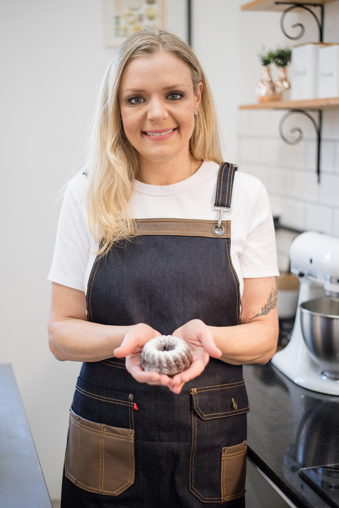
Apresentação
Olá, eu sou a Manu Rosa, chef confeiteira e proprietária da Manu Rosa Bakery.
Sou formada chef de cozinha, com especialização em Pâtisserie na França. Também fui vencedora do programa Que Seja Doce, no canal GNT, e trabalho com doces desde 2006.
Ao longo dessa trajetória, desenvolvi uma forma de ensinar que une técnica, proximidade e experiência real para quem deseja entrar ou evoluir no universo da confeitaria.
Modalidades
As formações e experiências foram organizadas para atender quem quer aprender, se aperfeiçoar ou desenvolver novas possibilidades profissionais.

Formação completa
Curso semestral completo, com mais de 30 aulas, pensado para habilitar a aluna a atuar como confeiteira profissional.
Aulas especiais
Aprenda receitas específicas e muito especiais, como bolos, cookies, brownies, cucas, pães, tortas salgadas, além de receitas sazonais para diferentes épocas do ano.
FORMAÇÃO PRESENCIAL
Uma experiência de aprendizado feita para quem quer desenvolver técnica, entender os processos e confeitar com mais confiança, seja para casa ou para vender.
Consultoria prática
Aprimore o cardápio do seu restaurante com receitas consagradas da Manu Rosa Bakery e uma leitura mais estratégica da produção.
Mão na massa
Aulas pensadas para quem deseja aprender com profundidade, colocar a mão na massa e desenvolver segurança no preparo, na execução e no acabamento.
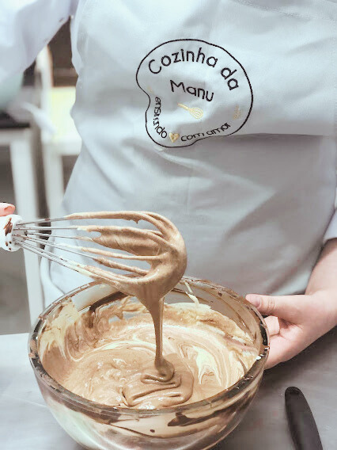
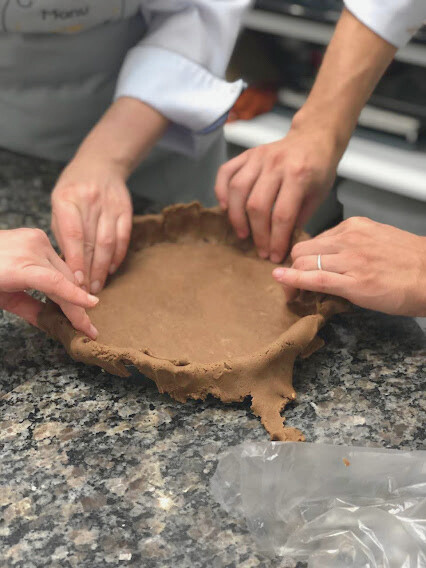
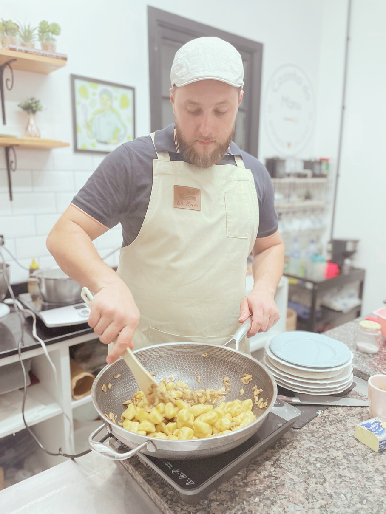
Aulas especiais
Contamos também com chefs convidados para aulas especiais, ampliando o repertório, a vivência de mercado e a experiência de aprendizagem.
Aprender com a turma
Receitas testadas, técnica consistente e uma experiência de aprendizado pensada para quem deseja evoluir de verdade na confeitaria.
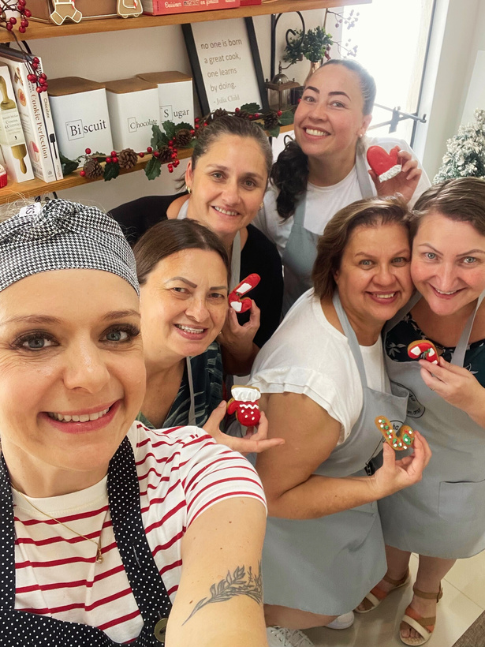
Curso profissionalizante
Confeitaria Francesa, Brasileira e Americana
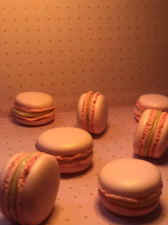
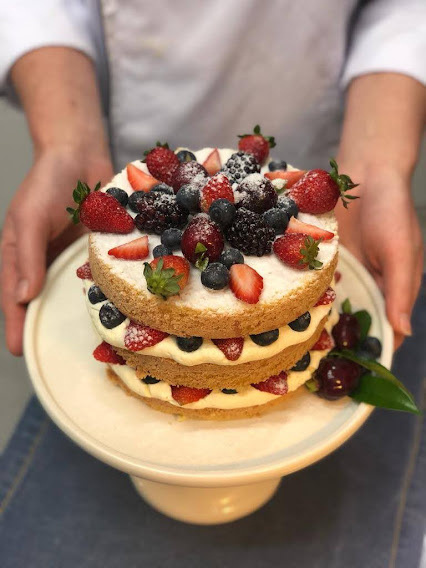
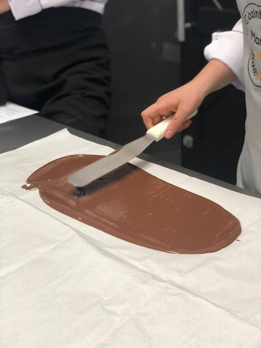
Reconhecimento
Os indicadores abaixo foram organizados com base no material oficial para traduzir a consistência da trajetória da Manu na formação em confeitaria.
Conquistas
Uma etapa que reúne turma, celebração e certificado para traduzir a experiência de evolução vivida em aula.
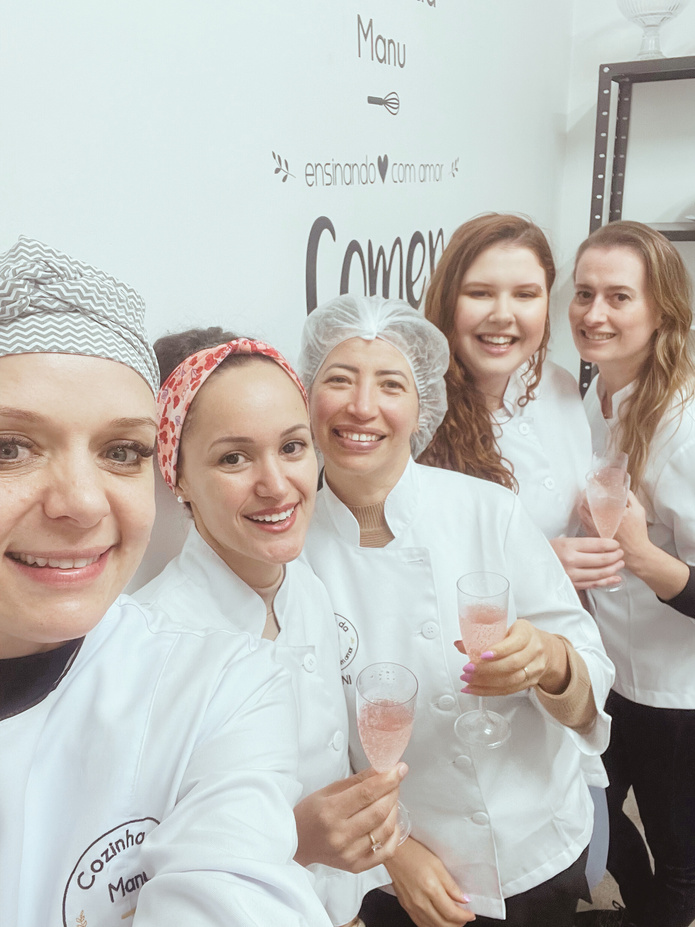
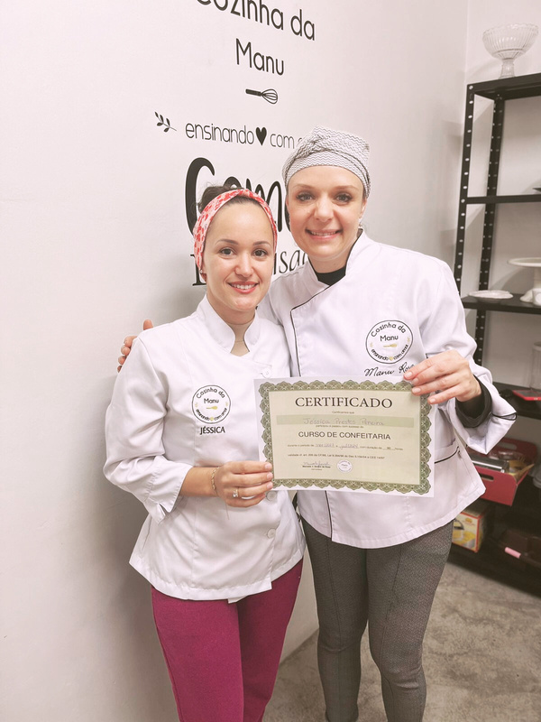
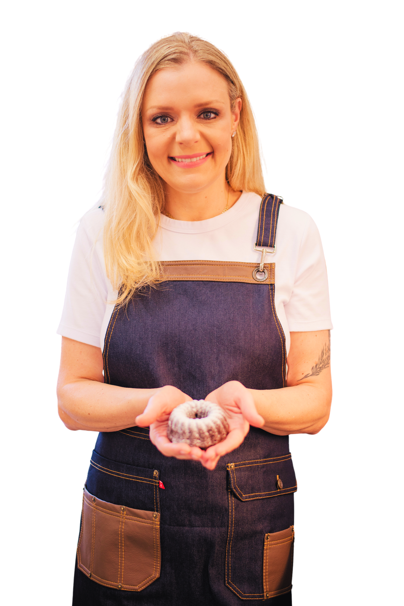
Próximo passo
Para mais informações sobre datas, valores e cronogramas, entre em contato pelo nosso WhatsApp.